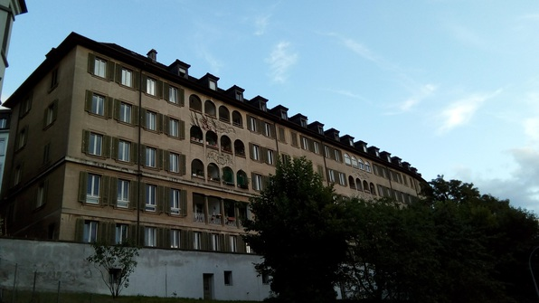
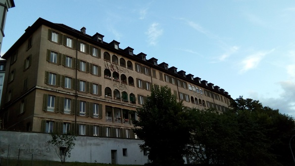

I spent too long tussling with freaking LycaMobile prepaid SIM (when things that just work don’t, aaargh!). So I gotta keep this short even though it was a great day.
German Lessons
Lots of vocab. Fun though! Signups for oral exam Tuesday are up :P
Lunch
Lunch is excellent! Navi can’t make it, so it’s me, Do Yoon, Alex, and after a few minutes, Crystel. Finally Alex gets a bit more talkative, mostly about the cheap food in Prague. And fun talking with Crystel as well about Dutch history and the dykes and global warming (yikes!) The food is also awesome!
Get SBB cards
Walk with Janna to the HB to get my train cards! Shell out 300 francs for the Halbtax and Gleis 7 train cards, pretty sure they’ll be worth it. The train station employee is super awesome and tells me exactly how to use everything. Talk with Janna about math education, she’s a math major, so that’s fun.
Blooper note: have to run all the way up and down the stairs to Culmann to get my d’arvited passport photos. Rrrr.
Walk with Betty
Try to get a SIM card at the Salt store but they need my residence permit. Irritated, I run up to Culmann to grab the relevant documents, end up looking into all the different pricing schemes, which are intentionally confusing and badly organized; end up going with LycaMobile. Am about to head out to get a physical SIM card, Betty joins me. The first place we look is closed, so we walk to Sonnegstrasse to check out the other places I thought I saw on Maps. No luck–but I pull out my frisbee and we decide to go to a park near the kreisbuero, where we went to get our residence permits. Incredibly lovely walk and we play some frisbee! Learn Betty’s family speaks Cantonese at home, despite her impeccable Aussie accent.
 

On the way back, we hit a convenience store that sells LycaMobile. So we each get cards. Betty grills the fellow to make sure we’re getting the right thing.
Back at Culmann, I make a disastrous-looking but tasty pile of eggs and immediately thence go out with Cody (3rd UW guy, first time I’ve met him) and Daniel. We go to the student bar and get beers. The beer is delicious, and Cody is a neat dude, avid mountaineer. He’s been in Switzerland before, so we have a lot to talk about. We plan a bit more for the hike this weekend! At the end, Cody busts out a giant Swiss chocolate bar and insists we consume the whole thing. What a guy!

At Culmann again, I install the SIM, buy the $6 1GB data plan, and fire everything up! I get confirmation texts and am just about to close the case when I decide to check the data with the browser. No dice–everything is offline.
With growing frustration, I encounter loads of forum posts documenting the same problem and offering useless solutions. The gist is that I have to turn on roaming, but then I have no protection against accidentally connecting to other networks when outside Switzerland. I still have no solution, but at least the data works. Jeez!
Finally, I write this log and try to get some sleep before lessons tomorrow! Night y’all!
P.S. If you want to contact me, and you’d prefer not to use Facebook Messenger, get a WhatsApp. Then change the last digit of the following number to an 8 and punch it in! That should find me!
+41 77 972 93 59